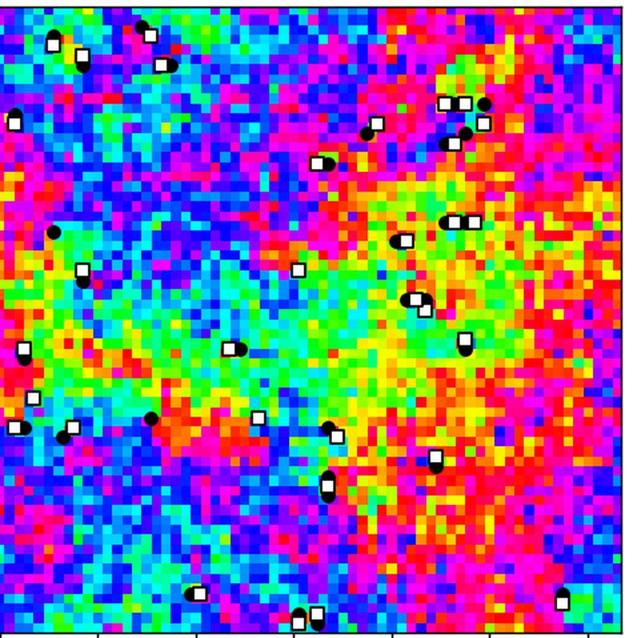

assets/img/portrait.jpg
Carter Williams
TODO: position, e.g. PhD student · Department of Physics, Northeastern University
About
TODO: two or three sentences in your own words: who you are, what you work on, who you work with.
Research interests
Publications
-
TODO: Paper title
Talks & presentations
-
What physics does it take to build a reasonable solar system?
-
TODO: talk or poster title
Projects
Computational Physics Portfolio
PHYS 7321 · Fall 2026Three projects, each with its own write-up, figures and code. Each one starts from a simple model and asks which pieces of physics have to be added before the results look right.
Open the portfolio →
Solar system formation
N-body planet formation with collisions, fragmentation, disk physics and GR. The project tracks which physics a reasonable solar system needs.
Project site →
Defects from phase transitions
Vortices, domain walls and Kibble–Zurek scaling in lattice models of cosmological phase transitions.
Project site →
Sky-object classifier
A CNN that separates stars from galaxies in SDSS images. Training data come from a forward model of the telescope, and the project measures which ingredients matter.
Project site →